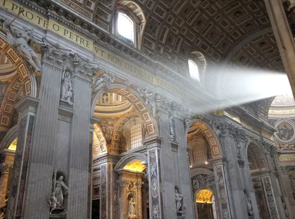

Sábado 15 de Abril de 2017 - ARGENTINA - TENDENCIAS - AMÉRICA - TELESHOW - MIX5411 - GRANDES - LIBROS
Tests y trivias - Vidriera - Lifestyle - Mascotas - NutriGlam - Salud - Autos - Turismo - RSE & Sust. - Real Estate - Ciencia - Fitness

|
Lifestyle - Salud - Mascotas - NutriGlam - Turismo - Estilos - Autos - Horóscopo |
|
Sábado 15 de Abril de 2017 - ARGENTINA - TENDENCIAS - AMÉRICA - TELESHOW - MIX5411 - GRANDES - LIBROS Tests y trivias - Vidriera - Lifestyle - Mascotas - NutriGlam - Salud - Autos - Turismo - RSE & Sust. - Real Estate - Ciencia - Fitness
|
TURISMO
14 de abril de 2017
No hace falta ser católico para apreciar la majestuosidad de la arquitectura religiosa. Cuáles son los templos religiosos más impactantes para adentrarse en los secretos y misterios de la “la città eterna”
Roma ostenta más de 600 iglesias y capillas, y no hace falta ser católico apostólico romano para apreciar su increíble belleza que vence el paso de los tiempos. Los turistas suelen concentrar su atención en la Basílica de San Pedro, en la Ciudad del Vaticano, pero, aunque es esencial visitarla, hay muchos otros templos religiosos para conocer durante una estadía en la ciudad eterna. A continuación, 7 imperdibles para visitar, parte del mundialmente conocido "Peregrinaje de las Siete Iglesias de Roma":
La Basílica de San Juan de Letrán, la catedral de la ciudad de Roma
Ésta quizás sea la iglesia más impresionante de toda Roma -sin contar, claro, a San Pedro-. Se trata de la Basílica de San Juan de Letrán, la catedral de la ciudad. Su maravilloso interior incluye seis tumbas papales y estatuas gigantes de los 12 apóstoles, quienes sostienen en sus manos sus íconos hagiográficos. Estas obras fueron esculpidas en el siglo XVIII y peregrinos de todo el mundo acuden año a año para verlas en persona.
La Basílica de San Pedro en el Vaticano, la iglesia más grande y más visitada del mundo (istock)
Qué resta decir sobre la Basílica de San Pedro en el Vaticano, la iglesia más grande y más visitada del mundo, centro neurálgico de la Iglesia Católica y obra arquitectónica colosal y majestuosa. Esta "isla eclesiástica" en el centro de Roma es un patrimonio de la humanidad invaluable. Los interiores de la basílica, su piazza, sus estatuas de ángeles y sus imperdibles museos son tan sólo algunas de las razones para acudir a un lugar repleto de historia y secretismo.
Esta “isla eclesiástica” en el centro de Roma es un patrimonio de la humanidad invaluable (istock)
Los fundadores del cristianismo fueron San Pedro y San Pablo
Los fundadores del cristianismo fueron San Pedro y San Pablo. Pedro no era un ciudadano romano y fue ejecutado por su fe mediante el método de la crucificción -fue crucificado boca abajo porque no se sentía lo suficientemente digno para morir de la misma manera que Jesús. Pablo, en cambio, como era romano, estaba protegido por ley contra este tipo de ejecuciones, por lo que fue decapitado en el lugar donde se erige la iglesia bautizada en su honor, que fue fundada por el Emperador Constantino cuando instauró el catolicismo como la religión oficial del Imperio Romano y reconstruida mucho tiempo más tarde.
Cerca de la estación de trenes Termini, en una parte poco turística de la ciudad, se encuentra esta basílica
Cerca de la estación de trenes Termini, en una parte poco turística de la ciudad, se encuentra esta basílica, incluida en 1990 en la lista del Patrimonio de la Humanidad por la Unesco. Incluye obras de arte como San Cayetano sosteniendo al Niño, por Bernini, y un busto de Pío IX por Ignazio Jacometti.
Esta iglesia fue construida en 325 como una casa de reliquias traídas a Roma por Santa Helena
Esta iglesia fue construida en 325 como una casa de reliquias traídas a Roma por Santa Helena, la madre de Constantino. La capilla de las reliquias es la atracción principal. Renovada en 1930, se pueden observar artefactos atribuidos a la Pasión de Cristo, incluyendo tres fragmentos de la cruz, y dos espinas de la corona.
La ejecución de San Lorenzo se llevó a cabo en el sitio donde hoy se erige la basílica
La ejecución de San Lorenzo se llevó a cabo en el sitio donde hoy se erige la basílica. Antes era un pequeño oratorio construido por Constantino I, el emperador convertido al cristianismo en el año 312. En la iglesia actual se puede encontrar la tumba con los restos de este martir de la Iglesia Católica.
Este lugar fue incluido al peregrinaje en el año 2000
Este lugar fue incluido al peregrinaje en el año 2000, reemplazando de esta manera a la Basílica de San Sebastián Extramuros. Es la séptima parada del peregrinaje y fue inaugurado por el papa Juan Pablo II el 4 de julio de 1999.